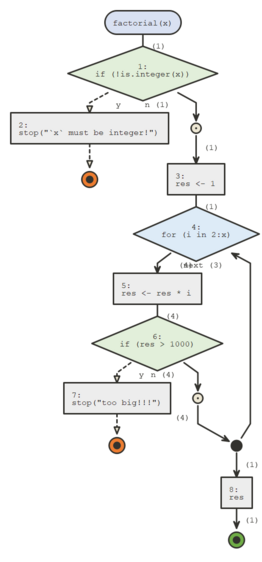

Simple Usage
V01_simple_usage.Rmd{flow}’s 2 main functions are flow_view() and flow_run(), which require only one argument for the simplest use cases.
library(flow)
flow_view()
flow_view() is used to display the logic of a function, a one item named list containing a function, a script or a quoted expression.
# display a function's body flow_view(ave)
# if non standard evaluation is an issue, use a one element named list fun <- ave flow_view(list(ave = fun))
# display script flow_view("../tests/testthat.R")
if statements always branch into two paths, whether an else clause is present or not. for, while, and repeat loops are also supported.
The colored circles are exit points, orange for errors (using stop()), green for returned values (using return()) or just reaching the end of the function.
If you installed {plantuml} you can set engine to "plantuml", plantuml diagrams are a bit less flexible but they often look more polished and compact.
# display a function's body flow_view(ave, engine = "plantuml")
flow_run()
flow_run actually executes a call to a function, and displays the logical path. It takes as a first argument an unquoted call to the function we want to dive in.
factorial <- function(x) { if(!is.integer(x)) stop("`x` must be integer!") res <- 1 for(i in 2:x) { res <- res * i if(res > 1000) stop("too big!!!") } res }

flow_run() counts how many time code blocks where entered and these numbers are displayed next to the edges between parenthesis.
It can also be used on calls that fail, which is convenient for debugging, for instance the following call fails :
If you call flow_run() on a call to an S3 generic, the appropriate S3 method will be represented.

The "plantuml" engine is not supported by flow_run().